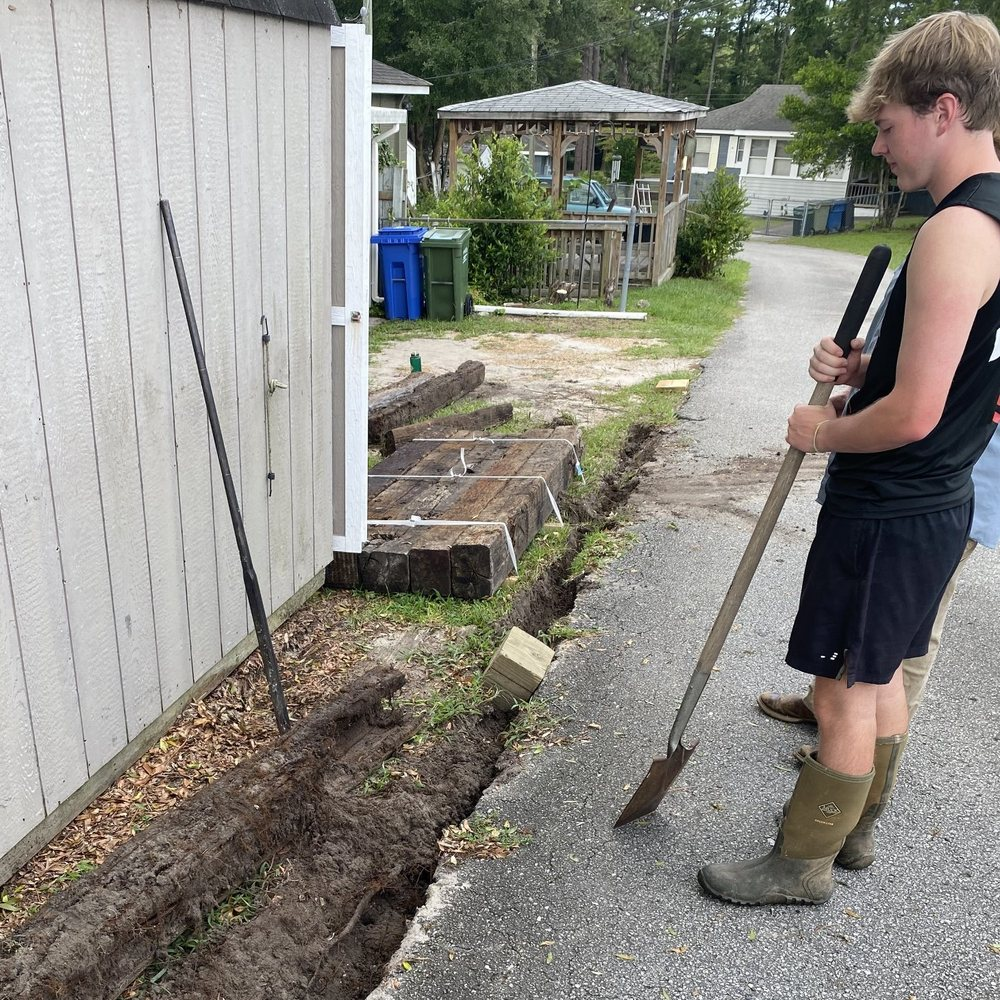

From a practice interview to a summer internship

Photo courtesy of Tucker Batten
Tucker Batten went to a practice interview in October. It turned into a paid summer internship.
The ABM junior from Pleasant Garden, N.C., interviewed with PJ Faust, president of Terra Green Precision Landscapes, at an event ABM organized. This summer Tucker will spend 11 weeks working for the company in Concord. He plans to work in the landscaping industry after graduation.
One practice interview, then a real one
The practice interview was supposed to be practice. Partway through, Tucker realized the internship fit. “The internship at Terra Green lined up super well with my summer goals, as well as my career goals,” he said.
PJ gave Tucker the application information, and he applied. After a formal interview, a background check, and a driving record check, Terra Green called with an offer.
Connections and clear goals
Tucker believes two things helped him earn the offer: the connections he made at Terra Green and his ability to explain how the internship fit his goals.
The practice interview helped with both. “The interview helped me build my confidence for the real deal, and it also provided me a network with several big names in the company.”
Every department in 11 weeks
In Concord, Tucker will rotate through all of the departments that make up the company’s daily operations.
He is most excited about learning how his skills in ag business and horticulture can be applied to one career. He is most nervous about “having to learn to drive box trucks.”

Photo courtesy of Tucker Batten